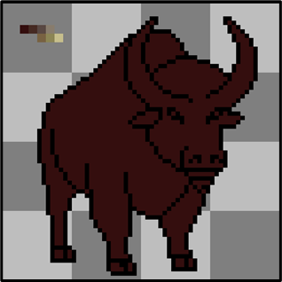
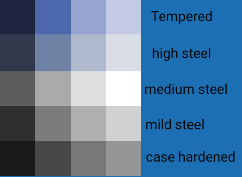

MShockXotto+ style guide
MShockXotto+ was originally the mashup of the MShock and the Xotto tileset, both of which were already build on a few other tilesets. This means that MSX never had a strong style guide. And it still has not, the present style guide will list a few rules to follow but since MSX is a patchwork of different styles there's a lot of wriggle around the guide. The main thing that we want to keep from the previous tilesets is the anime/cartoon style of the monsters and characters, and the main thing we're moving away from is the random noise over sprites.
- Cartoon style, make your sprite recognisable.
- Clean texture without random noise
- Keep the colour count per material (bone, meat, cotton, wood, metal etc...) low, around 3-4 per material.
Monsters

- Black outline RGBA(0,0,0,255)
- Round shadow directly below the monster RGBA(0,0,0,115)
Optional but Helpful
While not strictly necessary, these tools and knowledge will help:
- A visual editing program (Aseprite is a good option)
- Basic pixel art fundamentals such as Jaggies, Hue Shifting, Anti-Aliasing, Banding, etc. If you need to learn these, check out these guides and tutorials.
Finding References
References are essential when creating any sprite. Start by gathering visual references for what you want to create.

Not all creatures in Cataclysm have real-world counterparts. You can create your own references through photobashing (combining multiple images) or drawing your own. Photobashed references don't need to be perfect—they just serve as a visual guide.

Your own hand-drawn references work great too. You can shrink your drawings into pixel art size and use them as tracing tools.
[!WARNING] Avoid AI for reference materials. While AI results may look polished, they often introduce errors in anatomy and shading that will affect your sprite quality.
Sprite Size
The most common sprite size is 32x32, which works fine for anything human-sized or smaller. For larger creatures (megafauna, bosses, etc.), consider using 64x64 or larger sizes. A bigger sprite better conveys size and threat while providing more room for detail.
Creating the Outline
- Start with a clear outline in pure black RGBA(0,0,0,255)
- Only the outward-facing outline strictly needs to be black, but outline everything for now
- Refine by removing jaggies as needed
- Later, recolor any internal black lines if needed

Picking Colors
Use existing color palettes from established MSX+ sprites when possible. Study sprites by Dandy in particular for good examples.
If you create your own palette, keep it to 2–5 colors and use Hue Shifting: start with cool dark colors and gradually shift toward warm tones. You can also mix multiple color ramps from existing palettes.
Lospec has community palettes available for download and use.

Start with the darkest (non-black) color in your palette and build up. Since you're working with limited colors in a cartoony style, dark colors serve double duty for both shading and base color (like fur).
Shading
Build up color gradually from dark to light. The characteristic MSX+ style uses rectangular blocks of color for shading:

Sparingly use the lightest colors from your palette.

Use a little anti-aliasing on larger sprites (64x64+), but keep it minimal to maintain the clean, cartoon aesthetic.

Polish
Take breaks and view your work with fresh eyes. Ask for feedback if you hit a wall. Small adjustments—brightness, inner line colors, alternative shading—often make the difference between good and great.
Shadows
Add shadows after the sprite is complete:
- Use pure black with transparency set to 115 : RGBA(0,0,0,115)
- Shape as a circle directly below the monster
- For large sprites, use tools like the filled ellipse tool in Aseprite
[!Tip] You can use one of those shadows:


Items

- Black outline RGBA(0,0,0,255)
- Items should be roughly scaled to the character, meaning that small object like pens and box cutter should be 20x20 and big items like disconnected oven should be 32x32.
- However, magnified items, like this 32x32 cooked meat sprite, are still okay for the sake of being easy to recognise and looking nice.
Grades of Steel

Use those palettes to differentiate the various grade of steel in items
Furnitures

- Outline using a less-saturated, darker color taken from the sprite's palette.
Terrain

- No outline required
- Terrain should fill their canvas as the game doesn't display anything behind them. Transparency will appear black in game.